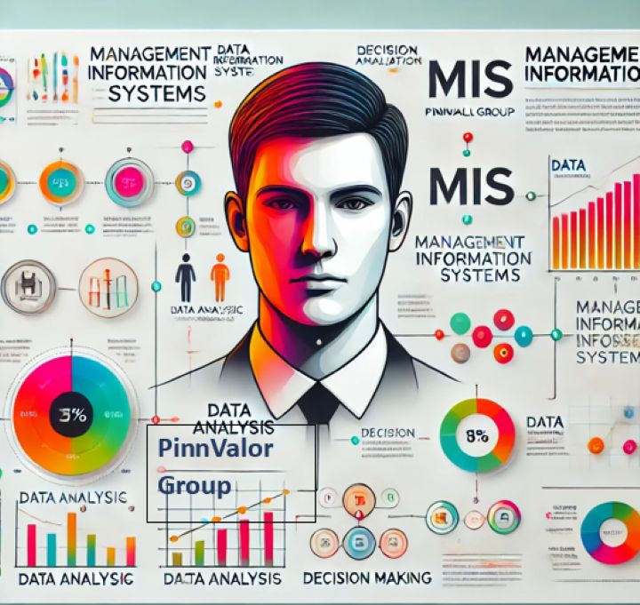

In the modern service-driven economy, the ability to deliver consistent and high-quality customer experiences is paramount. From banking and hospitality to healthcare and IT services, businesses rely heavily on Management Information Systems (MIS) to manage operations, make informed decisions, and stay competitive. MIS has become the engine powering the service industry, where customer satisfaction and operational efficiency are the ultimate benchmarks of success.
The Role of MIS in the Service Sector
Unlike manufacturing, where physical products take center stage, the service industry focuses on delivering intangible value. MIS plays a pivotal role in ensuring the smooth delivery of these services by enabling real-time data collection, analysis, and reporting.
Let’s explore how MIS transforms key areas of the service sector:
1. Customer Relationship Management (CRM)
Service industries thrive on customer relationships, and MIS provides the backbone for effective CRM systems. These systems help companies track customer preferences, predict behavior, and deliver personalized experiences. For example:
Real-Life Example: Domino’s Pizza (Global)
Domino’s leverages its proprietary MIS platform, “Domino’s Pulse,” to track customer orders, monitor delivery times, and offer personalized discounts. This technology-driven approach helped the company achieve faster delivery and enhanced customer loyalty.
Indian Example: Zomato
Zomato uses MIS to analyze customer reviews, order preferences, and peak ordering hours to refine its operations and enhance the user experience on its platform.
2. Operational Efficiency
MIS ensures that service providers maintain seamless operations by automating workflows, optimizing resource allocation, and tracking performance metrics.
Real-Life Example: Marriott International (Global)
Marriott uses its “Marriott’s Digital Services” MIS platform to monitor room occupancy rates, manage bookings, and predict customer demands during peak seasons. This has allowed the hotel chain to maintain high occupancy rates and customer satisfaction levels.
Indian Example: Indian Railways
With its implementation of MIS platforms like the Passenger Reservation System (PRS) and Freight Operations Information System (FOIS), Indian Railways has revolutionized ticketing, resource allocation, and freight management, reducing delays and improving service quality.
3. Decision-Making and Strategy
MIS provides actionable insights that enable businesses to develop strategies, enter new markets, and improve service offerings.
Real-Life Example: Amazon Web Services (Global)
AWS uses advanced MIS tools to monitor customer usage of cloud services, analyze industry trends, and design tailored pricing strategies. This data-driven approach has solidified AWS’s leadership in the cloud computing industry.
Indian Example: Tata Consultancy Services (TCS)
TCS uses MIS to monitor project delivery timelines, client satisfaction metrics, and employee performance, helping it maintain its reputation as a leading IT services provider.
4. Service Personalization
Customers expect tailored experiences, and MIS enables businesses to deliver. By analyzing data, businesses can anticipate customer needs and offer personalized services.
Real-Life Example: Netflix (Global)
Netflix’s recommendation engine is a classic example of MIS in action. By analyzing viewing patterns, preferences, and feedback, the platform delivers personalized content recommendations to each user.
Indian Example: HDFC Bank
HDFC Bank’s MIS-backed CRM system helps it provide personalized financial product recommendations and alerts based on customer profiles and transaction histories.
5. Enhancing Employee Productivity
Service companies depend on a productive workforce to deliver exceptional services. MIS helps in managing workforce schedules, performance tracking, and training programs.
Real-Life Example: Uber (Global)
Uber’s driver-partner management system is powered by MIS, ensuring drivers are efficiently assigned to rides, tracking their performance, and offering training modules for improvement.
Indian Example: Infosys
Infosys leverages MIS to monitor employee utilization rates, schedule projects efficiently, and design learning programs to upskill its workforce.

Challenges of Implementing MIS in the Service Industry
Cost of Implementation: Developing and maintaining MIS platforms requires significant investment.
Data Security: Service industries handle sensitive customer data, making cybersecurity a priority.
Adoption Resistance: Employees and management may resist the shift to MIS due to a lack of technical expertise.
The Future of MIS in the Service Industry
As technology evolves, MIS will play an even greater role in transforming the service industry. Future trends include:
AI and Machine Learning: Predictive analytics will drive better decision-making and personalized services.
Blockchain Technology: Ensuring secure and transparent transactions, especially in banking and logistics.
IoT Integration: Real-time monitoring of assets in sectors like healthcare and hospitality.
Conclusion
Management Information Systems are no longer optional in the service industry; they are a necessity. From streamlining operations to delivering personalized experiences, MIS empowers businesses to stay ahead in a fiercely competitive landscape. Companies like Domino’s, Marriott, HDFC Bank, and Infosys have shown that leveraging MIS can lead to unparalleled efficiency, customer satisfaction, and growth.
As the service industry continues to expand, those who embrace MIS will undoubtedly emerge as leaders in this new era of business excellence.